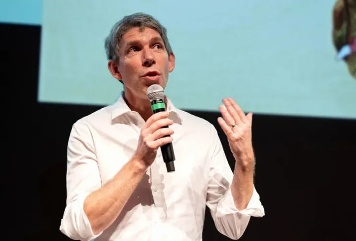
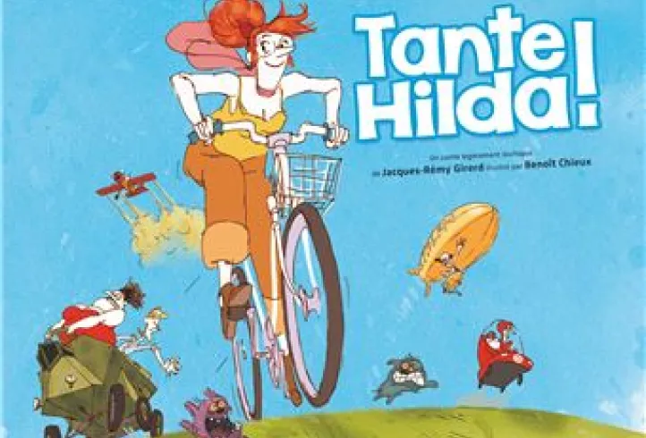
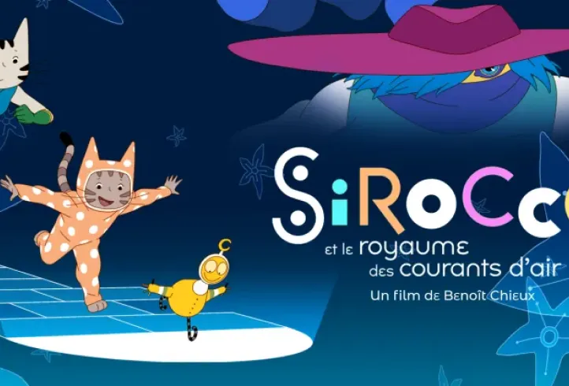

Benoït Chieux
Réalisateur de film et animateur français

Biographie
Benoît Chieux, né en 1969 à Lille, est un
réalisateur et animateur français, reconnu pour
son travail au studio
Folimage. Il a coréalisé des
films d'animation acclamés tels que Tante
Hilda ! et Sirocco et le Royaume des Courants
d'air, remportant plusieurs prix prestigieux.
Son style unique allie techniques
traditionnelles et innovation
artistique.
Liste des films ou interventions durant le
festival
Projection de Tante Hilda ! (7 juillet)

Projection de Sirocco et le Royaume des
Courants d'air (13 juillet)
